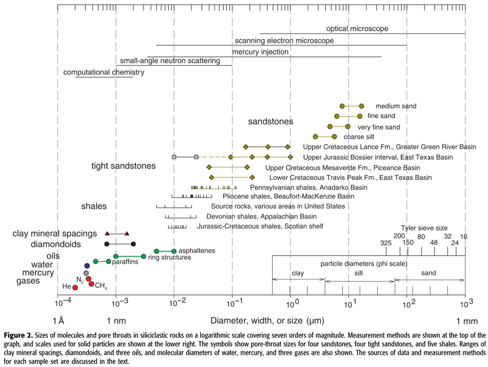

Adsorption and Migration Mechanisms in Gas Shales at Pore Scale
Table of Contents
1 To Do
1.1 Literature Review
1.1.1 Concepts
[ ]diffusion based models reservoir engineering book[ ]learn to do reservoir simulation coal bed methane
1.1.2 Papers
1.2 Data Analysis
1.2.1 DOING analyse data [0%]
[-]L100[X]40[ ]60[ ]80
[ ]A153[ ]60[ ]45[ ]30
[ ]AA83A[ ]60[ ]45[ ]30
[ ]AA94[ ]60[ ]45[ ]30
[ ]AA114[ ]60[ ]45[ ]30
[ ]AT1[ ]60[ ]45[ ]30
[ ]B53[ ]60[ ]45[ ]30
1.2.2 NEXT python adsorption calculations [100%]
[ ]cell volume calibration[ ]void volume calibration[ ]automate mole calculation based on given function[X]calculate injected moles[X]calculate leak rate[X]make leak rate file[X]split apply combine based on eos and specific volume[X]fit with poiseuilles eqn
[X]calculate adsorption[X]calculate leaked moles[X]calculate moles present[X]calculate adsorbed moles
[-]calculate isotherms[X]first order[ ]second order[ ]elovich[ ]film diffusion - linear driving force[ ]film diffusion - mass transfer equation[ ]intraparticle diffusion - weber morris[ ]intraparticle diffusion - homogeneous solid diffusion model[ ]ficks law[ ]unipore model[ ]bidisperse model
[ ]fit isotherms[ ][ ]langmuir[ ]dubinin[ ]bet
[ ]write files[ ]saturation pressure[ ]t plot[ ]alpha s plot[ ]BJH psd[ ]DFT psd
Notes: classes / functions
- sample data - function/dictionary
- adsorbate data - function/dictionary
- manometric calculations - class
- get pressure data from csv file
- calibrate reference cell volume
- isotherm calculations - class
1.3 Experiment
1.3.1 DOING do experiments [57%]
[X]L100[X]40[X]60[X]80
[X]A153[X]60[X]45[X]30
[X]AA114[X]60[X]45[X]30
[X]AA83A[X]60[X]45[X]30
[ ]AT1[ ]60[ ]45[ ]30
[ ]AA94[ ]60[ ]45[ ]30
[ ]B53[ ]60[ ]45[ ]30
1.3.2 WAITING-ON density calculation - water immersion
1.3.3 NEXT order relative humidity meter
2 Papers
- Standard Operating Procedure for Manometric Rig
- A Review of Manometric Adsorption Measurement Methods and Associated Errors for Gas Shales
- Effect of Reservoir Temperature, Pressure, Geo-chemistry, and Pore-Geometry on Gas Shale Adsorption Characteristics and Reservoir Producibility
- Methane-Water Multi-Component Adsorption Measurement in Gas Shales
- Methane-Water-Carbondioxde Multi-Component Adsorption Measurement in Gas Shales
- Methane-Water-Surfactant Multi-Component Adsorption Measurement in Gas Shales
- Effect of Gas Desorption on Shale Gas Extraction
- Manometric Adsorption Data Acquisition and Analysis with LabVIEW and Python
3 Adsorption
3.1 Theory
- it's best to use the simplest model that suits a given purpose, both to undue emphasis on the fine points of theory often tends to obscure what's really going on.
3.1.1 Single-Component Models
- Gibbs Thermodynamic Approach
- Mono-layer Models
- Multi-layer Models
- Micropore-filling Models
3.1.2 Multi-Component Models
3.1.3 Other Concepts
3.1.4 Adsorption Characterization Methods
4 Diffusion
- gas production from shales involves 3 steps cite:Crosdale1998:
- Darcy flow in natural and hydraulic fractures,
- Knudsen diffusion in nano-pores, and
- Gas desorption in nano-pores.
- the rate determining step is diffusion in nano-pores cite:Crosdale1998
- diffusion in shales is a complex process; consequently most models attempting to characterise this phenomenon are approximate cite:Ruckenstein1971
- in laboratory experiments, the adsorption process involves cite:Qiu2009
- film diffusion - in the fluid film
- intra-particle diffusion - along pore walls
- mass-action - ad/desorption on the active sites in pores
- mass-action is instantaneous for physisorption; one of the other two steps is usually rate determining cite:Qiu2009
- models used to fit experimental kinetic data often fail to consider if the boundary conditions assumed by the model are valid to the given experimental conditions cite:Qiu2009
4.0.1 Rate Law Based Equations
4.1 Elovich Equation
4.3 Experiment / Calculations
5 Pore/Surface Characterization
5.1 Pore/Surface Characterization Methods
It must be noted that no experimental methods exist that can give the absolute value of pore characteristics listed above; measured values are characteristic of the experimetal conditions cite:Sing1985

Figure 1: Pore Size Distribution from Nelson 2009
6 Reservoir Simulation
7 Geology
- CO2 production in coals can be due to interactions between coal water and an igneous rock, although significant amounts of CO2 related to non-igneous activity maybe present cite:Crosdale1998
- Reservoir Characterization
- Shale Geochemistry
- Bowland Basin
- Lothian Shales
8 Enhanced Recovery
- Gas injection may increase methane recovery from shale r (setq-default dotspacemacs-line-numbers t)
eservoirs by one of the two mechanisms cite:Clarkson2000:
- lowering methane partial pressure in free gas
- competitive adsorption
9 Bibliography
bibliography:~/bok/bibliography/allref.bib